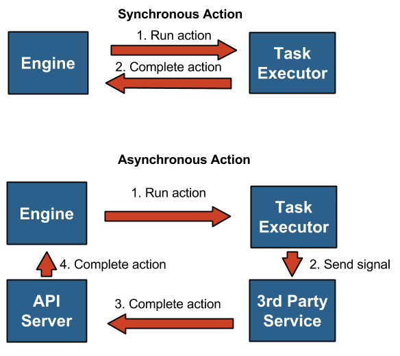

Actions¶
Actions are a particular instruction associated with a task that will be performed when the task runs. For instance: running a shell script, making an HTTP request, or sending a signal to an external system. Actions can be synchronous or asynchronous.
With synchronous actions, Mistral will send a signal to the Mistral Executor and wait for a result. Once the Executor completes the action, the result will be sent to the Mistral Engine.
With asynchronous actions, Mistral will send a signal to a third party service and wait for a corresponding action result to be delivered back via the Mistral API. Once the signal has been sent, Mistral isn’t responsible for the state and result of the action. The third-party service should send a request to the Mistral API and provide information corresponding to the action execution and its state and result.
How to work with asynchronous actions
System actions¶
System actions are provided by Mistral out of the box and are available to all users. Additional actions can be added via the custom action plugin mechanism.
Ad-hoc actions¶
Ad-hoc actions are defined in YAML files by users. They wrap existing actions and their main goal is to simplify using the same action multiple times. For example, if the same HTTP request is used in multiple workflows, it can be defined in one place and then re-used without the need to duplicate all of the parameters.
More about actions; Actions.
Note
Nested ad-hoc actions (i.e. ad-hoc actions wrapping around other ad-hoc actions) are not currently supported.